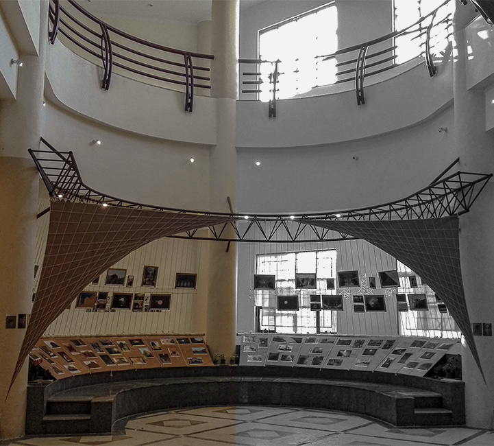

We traveled to Kashan for our Survey of historical building class and we design and construct this gallery
to show the out come of that trip as a photo gallery.
we tried to design something which was not seprated from
the faculty building an also had a sense of Kashan.
▾


We used these two colors to represent Kashan
historical fabric
and speceficly we wanted to show
mud material and plaster decoration.
Back to timeline